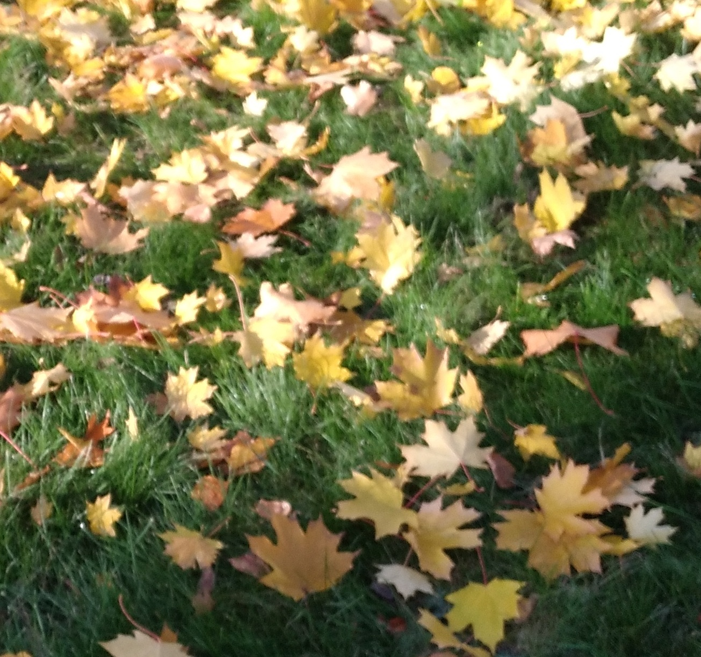

О себе
Я живу в Москве и очень люблю свой город. Московская осень, на мой взляд, самая прекрасная пора. Яркие краски повсюду. Особенно хороши парки и скверы столицы. Мое увлечение - это пешие прогулки по городу с фотоаппаратом, и, хотя фотографии у меня непрофессиональные - в них я выражаю свое видение мира.
|  | Но после любых путешествий приятно возвращаться домой. |